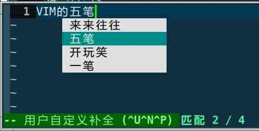

VIM内置输入法vimim_wubi
邹业盛
2016-01-10 16:55 更新
1. 项目情况
- 代码：http://code.google.com/p/vimim-wubi/
- 协议：LGPL
- 近况：自己日常使用，少有改动

2. 缘起
我一直是一个 vim 的使用者，在使用过程当中，当然也会觉得系统级的输入法与 vim 的配合总是不是很流畅。我也不是一个 vim 高手，很长一段时间内呢，也是凑合着用了。
后来我发现了 VimIM 这个项目，当时就觉得很惊讶，因为我看到了之前我没有想到过的一种实现方法——直接使用 vim 的内置脚本能力实现完整的输入法。这同时也刷新了我对于“扩展能力”的看法。
之后，我在 vimim 的列表中参与了一些讨论，然后在看它的源码时，觉得原理其实是很简单易懂的，就是利用 vim 本身的“补全”功能即可。然后因为我仅仅需要使用五笔输入法，会觉得 vimim 它太烦杂了（当时它就支持多种输入法了），于是就试着完全重新实现一个输入法，仅仅支持五笔。
其实没有多久一个可用的版本就出来了，事实上也真的不难。然后又花了一些时间在优化效率（其实不用刻意优于也完全没有问题的）和调整一些细节上。
从 2010 年左右算起，自己的这套东西也用了几年时候了，自己感觉不错。
3. 原理
- 实现 vim 的自定义补全函数。 具体实现就是根据输入的字符去一个码表谁看中找对应的字。对于五笔来说，规则简单码表简单。
- 在“输入法”状态时映射所有输入键。 就是在输入法状态下，把输入键（最基本的 [a-y] 键，五笔不需要 z 键）映射成输入字符，同时触发补全函数的行为，这样就可以实现输入了。
基本的就是这两点。剩下的就是实现具体功能上的一些东西。